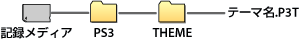

設定 > テーマ設定
テーマ設定
背景やフォントなど、XMB™のデザインに関する設定をします。
テーマ
XMB™に表示されているアイコンや背景などのデザインを設定します。テーマは、次の方法で設定できます。
プリインストールされたテーマを選ぶ
PS3™にプリイントールされているテーマを選びます。
PS3™でダウンロードする
PS3™の  （PlayStation®Store）や
（PlayStation®Store）や  （インターネットブラウザー）のWebサイトからテーマをダウンロードしたときは、ダウンロード完了後に自動的にインストールされます。
（インターネットブラウザー）のWebサイトからテーマをダウンロードしたときは、ダウンロード完了後に自動的にインストールされます。
ゲームディスクや、市販のBD映像ソフト（BD-ROM）からインストールする
テーマファイルが収録されているディスクのテーマを設定するときは、 （ゲーム）から
（ゲーム）から のアイコンを選び、設定したいテーマファイルを選びます。インストール完了後に自動的に設定されます。
のアイコンを選び、設定したいテーマファイルを選びます。インストール完了後に自動的に設定されます。
パソコンでダウンロード／作成する
パソコンを使ってWebサイトからテーマをダウンロードしたり作成したりしたときは、記録メディア内に［PS3］－［THEME］というフォルダーを作成し、その中にテーマファイルを保存します。テーマファイルは［.P3T］という拡張子で保存してください。

テーマファイルが保存されている記録メディアをセットし、 （設定）＞
（設定）＞ （テーマ設定）＞［テーマ］＞［インストール］を選び、ハードディスクにインストールします。
（テーマ設定）＞［テーマ］＞［インストール］を選び、ハードディスクにインストールします。
ヒント
- テーマファイルに該当するアイコンデータが含まれない場合、仮のアイコンまたはXMB™の標準のアイコンが表示されます。
- テーマファイルに複数の背景データが含まれている場合、テーマの背景がランダムに変化します。
- テーマファイルを作成するための開発者向けツールを提供しています（市販の画像加工ソフトウェアなどが必要です）。詳しくは、各地域のWebサイトをご覧ください。
- お使いのPS3™によっては、記録メディアを使うときに別売りのUSBアダプターなどが必要になる場合があります。
テーマを削除する
削除したいテーマを選んで ボタンを押し、［削除］を選びます。
ボタンを押し、［削除］を選びます。
カラー
XMB™の背景色を設定します。
| 標準 | 標準の背景色に設定する |
|---|---|
| 各色 | 選んだ色を背景色に設定する |
背景
テーマで使われている背景や、 （フォト）で壁紙に登録した画像などを、XMB™の背景として設定します。
（フォト）で壁紙に登録した画像などを、XMB™の背景として設定します。
| 明るさ | 背景の明るさを変更する |
|---|---|
| 標準 | 標準のテーマに設定する |
| クラシック | [クラシック]の背景に設定する |
| （テーマ名） | ［テーマ］で設定しているテーマの背景に設定する |
| 壁紙 | （フォト）で壁紙に登録した画像を背景に設定する |
フォント
XMB™や （フレンド）のメッセージなどで使用するフォントを設定します。システムソフトウェアの表示言語を韓国語／簡体字中国語／繁体字中国語に設定しているときは、この設定は選べません。
（フレンド）のメッセージなどで使用するフォントを設定します。システムソフトウェアの表示言語を韓国語／簡体字中国語／繁体字中国語に設定しているときは、この設定は選べません。
ヒント
システムソフトウェアの表示言語によって、選べるフォントの種類が異なります。